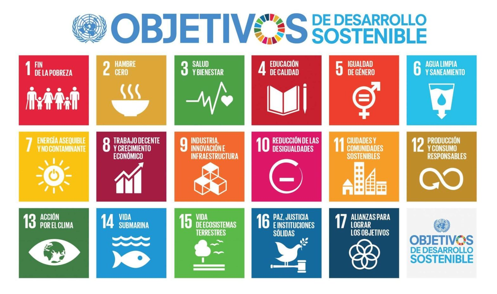

La presente SdA se relaciona con los ODS promoviendo la concienciación ambiental, el pensamiento crítico y la responsabilidad individual y colectiva hacia el cuidado del medio ambiente y la sostenibilidad.En particular, esta situación de aprendizaje contribuye al desarrollo de los siguientes ODS:
ODS 4: Educación de calidad, al fomentar el acceso a aprendizajes significativos, el uso de herramientas digitales y el desarrollo de competencias clave mediante la creación de podcasts divulgativos.
ODS 11: Ciudades y comunidades sostenibles y ODS 12: Producción y consumo responsables, al sensibilizar al alumnado sobre la importancia de adoptar hábitos sostenibles y responsables con el uso de los recursos naturales.
ODS 13: Acción por el clima, ODS 14: Vida submarina y ODS 15: Vida de ecosistemas terrestres, al promover la comprensión de los problemas ambientales y el papel de la ciudadanía en la mitigación del cambio climático y al trabajar contenidos relacionados con la biodiversidad, la conservación de ecosistemas y la importancia de su protección.
LA SdA se vincula con los Retos del siglo XXI, ya que impulsa el desarrollo de una ciudadanía crítica, informada y comprometida con la sostenibilidad así como un uso ético y eficaz de las tecnologías. A través del estudio de divulgadores científicos en el ámbito de la ecología y la sostenibilidad, el alumnado comprende la importancia de la comunicación científica en la sociedad actual y el papel de la ciencia en la resolución de problemas globales, así como la importancia de la protección del mundo animal y los ecosistemas globales.
El uso del formato podcast favorece el desarrollo de la competencia digital, la creatividad y la comunicación y habilidades sociales, esenciales para afrontar los desafíos globales. De este modo, la actividad no solo contribuye a la adquisición de conocimientos científicos, sino que también promueve valores como la cooperación, la responsabilidad ambiental y el compromiso con un futuro sostenible.